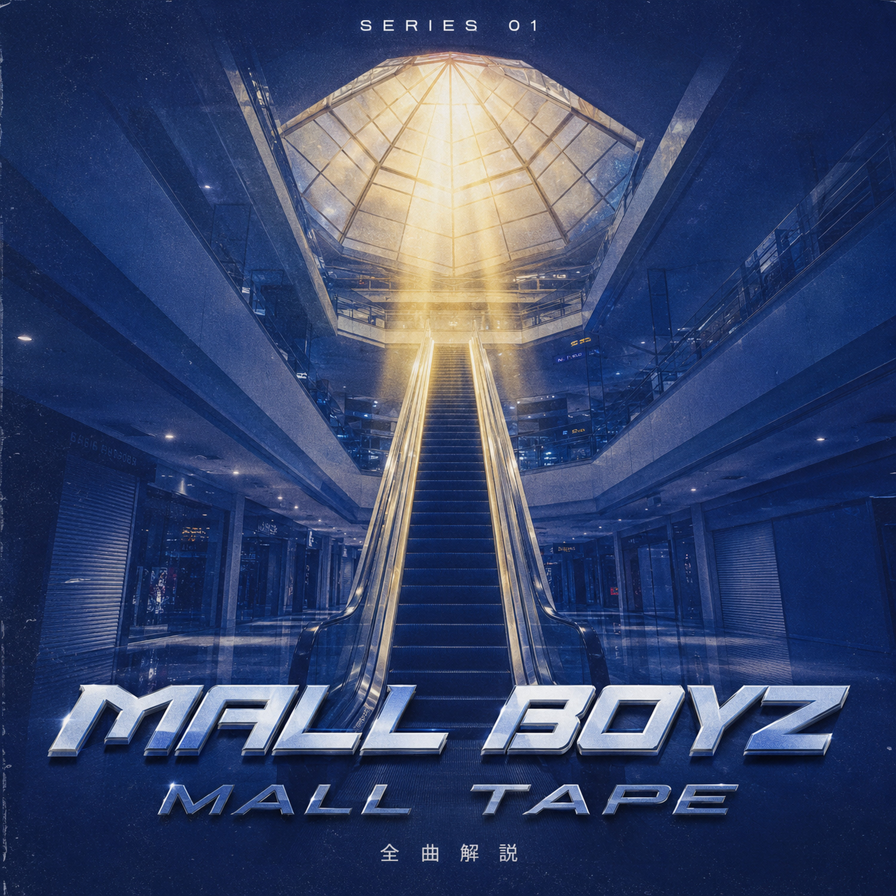

SERIES 01 — 完結
Mall Boyz『Mall Tape』(2018)
2018年12月26日リリース、TohjiとgummyboyによるユニットMall Boyzの1st EP。ふたりの共通の原風景であるショッピングモールをコンセプトに、全4曲・約10分という短さで新世代の空気を決定づけた作品。
Episodes
全曲解説
個別トラックの制作クレジットは公開情報が乏しいため、裏付けの取れた範囲でのみ言及しています。
エピソードを読み込み中…
Other Series